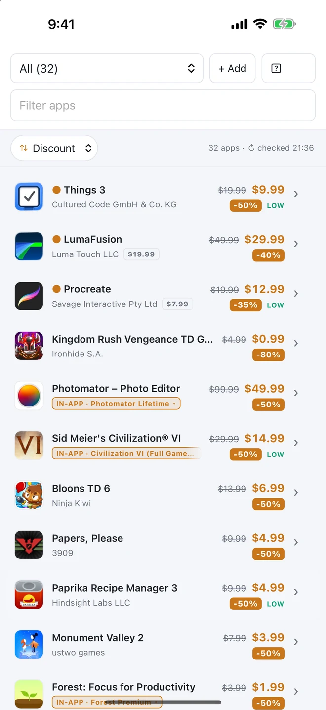
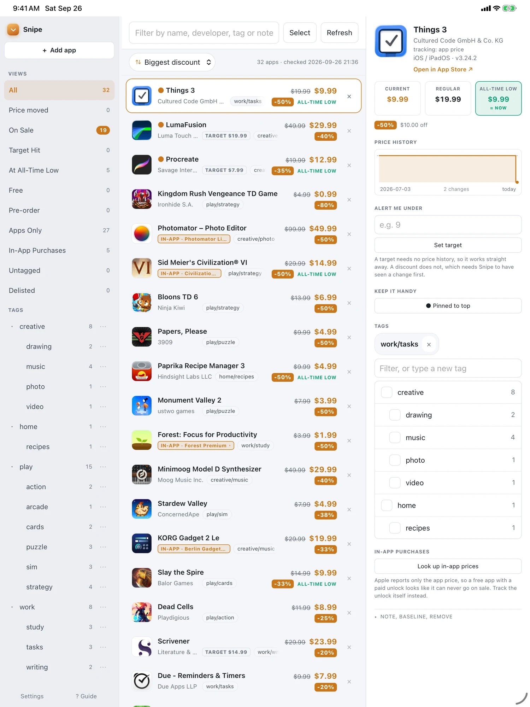
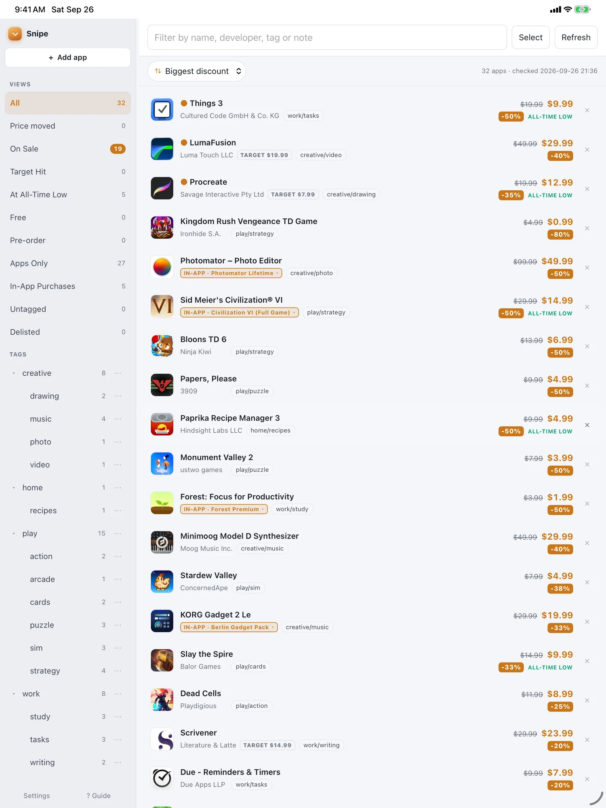
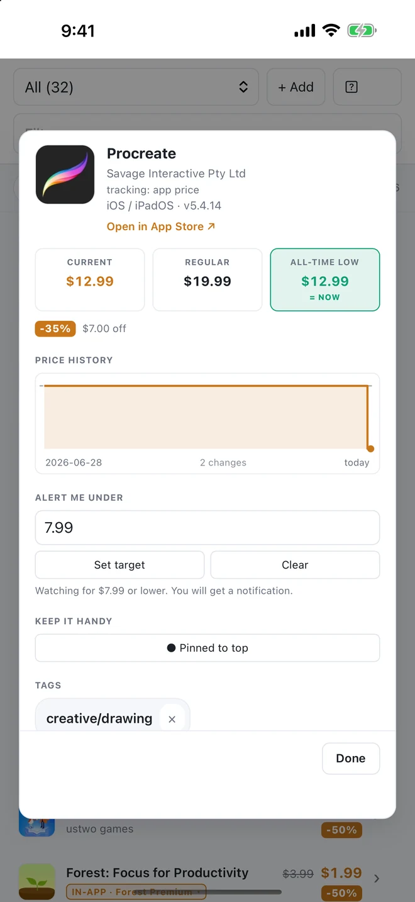

Watch the prices of apps you want.
Add the Mac, iPhone and iPad apps you have been meaning to buy. Snipe files them under your own tags, keeps an eye on what each one costs, and tells you when a price drops, goes free, or hits the number you set.
In development. No account, no subscription, no tracking.
Every screenshot here is a real watchlist, not a mockup.

From the App Store to your list in three taps.
No copying links, no typing names. Snipe sits in the ordinary iOS and Mac share sheet, so whatever you are already looking at is one tap away from being watched.
Send it to Snipe
You are in the App Store looking at something you want. Tap Share, pick Snipe. It works from Safari too, on any App Store link.
Pick what to watch
The app's own price, or any one of its in-app purchases. Snipe reads the list and shows you what is there.
Tag it, or don't
File it under your own tags while you are there, or skip straight past. Either way it is now watched, and there is nothing else to set up.
One-off, the first time: iOS hides new share extensions until you say otherwise. Tap Share anywhere, scroll the icons to the end, tap More, and switch Snipe on. Apple never prompts you to do this, which is why it catches people out.
Watch the unlock, not just the app.
Most well known apps are free now, with the real price behind an unlock or a subscription. Apple only ever publishes the app's own price, so by its numbers a free app can never go on sale, no matter what the thing inside it costs.
Snipe watches the purchase itself. Point it at Procreate's unlock, a Gadget pack, a full-game upgrade, and it tracks that price the same way it tracks any other. It is the only way to follow most of the App Store.

Your own shelves, nested.
File apps under creative/music or work/writing, then click a branch to see only that. Tag many at once, and every tag becomes a view in the sidebar with a live count beside it.
There are ready-made views too: everything on sale, everything at its lowest ever, anything that has hit the price you named, and whatever you never got round to filing.

Apple never says what an app usually costs.
The App Store publishes today's price and nothing else. No "was", no sale flag, no history. Snipe fills that in the only honest way available: by watching, and remembering what it saw.
So every app carries its regular price, its lowest price ever, and the shape of how it got there. One look tells you whether to buy now or keep waiting.

Built for a wishlist that got out of hand.
One notification, at a time you pick
Scheduled by the phone itself, so it arrives whether or not iOS ever lets Snipe run in the background. It says what is on sale and what moved since yesterday, and stays quiet on a day with nothing to report.
Name your price
Set the number you'd actually pay. Snipe notifies you when an app crosses it — no history required, so it works the day you add something.
Know if it gets better
A sale isn't always a good one. Snipe marks the price it has never seen beaten, so you know whether to buy or keep waiting.
Find it without leaving
Search the App Store by name from inside Snipe and add what you find. The share sheet is there when you are already in the App Store; this is for when you are not.
The count on your Home Screen
How many of your apps are on sale right now, and the deepest discount among them, without opening anything.
Watch it before it exists
Add an app that has not been released yet and Snipe starts the moment it lands, with the launch price as the baseline rather than a guess.
Your history, out of Snipe
Every price Snipe recorded, as CSV or a full backup. Apple publishes today's price and nothing else, so this history exists nowhere but your own devices — which is exactly why you should be able to take it with you.
One list, every device
Your watchlist syncs through your own iCloud account. Add on the Mac, see it on the phone.
Notice when apps vanish
Apps get pulled from the store. Snipe tells you instead of quietly showing a stale price forever.
A real Mac app, and a real iPad one.
The same three columns above run natively on macOS: sidebar, list and detail, with the menu bar, keyboard shortcuts and window behaviour you expect. On iPhone it folds down to one clean list. Your watchlist syncs between them through your own iCloud account.
Why I built it.
My own watchlist ran past two hundred apps, mostly obscure music tools, and I kept missing sales on the ones I actually wanted. Every screen here is Snipe’s real interface, shown with a library of apps you are more likely to recognise than mine.
Yours will look like whatever you collect. That is the point of the tags.
There is no server to trust.
Snipe talks to Apple to look up prices, and to your iCloud to sync. That's the whole list of things it talks to. Read the privacy policy.
- No accountThere's nothing to sign up for.
- No analyticsYour watchlist isn't sent anywhere or measured.
- Your iCloud, not oursSync runs through your private database.
- Yours to readThe watchlist is a plain JSON file on your Mac.